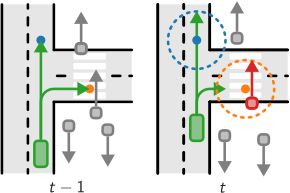
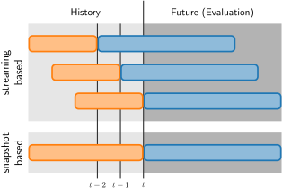
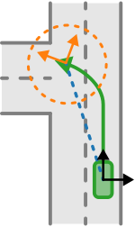
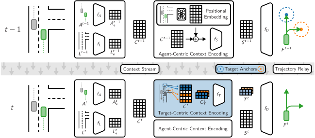
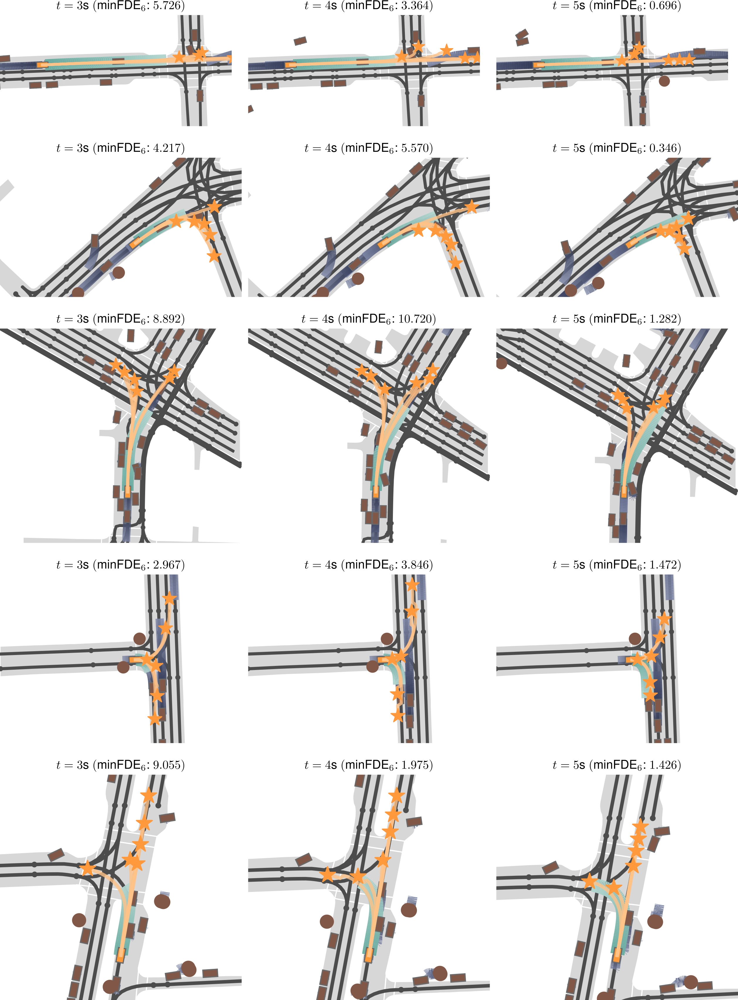
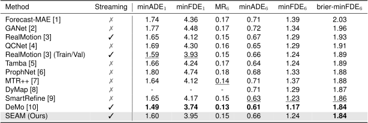
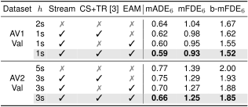

Abstract
Future trajectories of neighboring traffic agents have a significant influence on the path planning and decision-making of autonomous vehicles. While trajectory forecasting is a well-studied field, research mainly focuses on snapshot-based prediction, where each scenario is treated independently of its global temporal context. However, real-world autonomous driving systems need to operate in a continuous setting, requiring real-time processing of data streams with low latency and consistent predictions over successive timesteps. We leverage this continuous setting to propose a lightweight yet highly accurate streaming-based trajectory forecasting approach. We integrate valuable information from previous predictions with a novel endpoint-aware modeling scheme. Our temporal context propagation uses the trajectory endpoints of the previous forecasts as anchors to extract targeted scenario context encodings. Our approach efficiently guides its scene encoder to extract highly relevant context information without needing refinement iterations or segment-wise decoding. Our experiments highlight that our approach effectively relays information across consecutive timesteps. Unlike methods using multi-stage refinement processing, our approach significantly reduces inference latency, making it well-suited for real-world deployment. We achieve state-of-the-art streaming trajectory prediction results on the Argoverse 2 multi-agent and single-agent benchmarks, while requiring substantially fewer resources.
Motivation and Contributions
- Future trajectories of neighboring traffic agents have a strong influence on the decision-making of self-driving vehicles
- The trajectories provide additional input to motion planning: high latency leads to unreliability due to outdated predictions
- Challenges
- State-of-the-art models often rely on iterative refinement (improves benchmark accuracy but computationally expensive and slow)
- Standard benchmarks: isolated scenarios, whereas real vehicles operate in a continuous stream requiring temporal consistency
- Scene context extraction is a critical challenge as relevant map elements often lie far ahead (100m+) along an agent's future path
- Core Mechanisms
- Temporal Information Propagation: Leverage the consecutive nature of streaming data to pass information across frames, improving accuracy and stability
- Prior-Informed Modeling: Uses prediction endpoints from the previous frame to focus on relevant future regions by encoding auxiliary target-centric features
Key Contributions➝ Streaming Endpoint-Aware Modeling (SEAM): consistent and efficient continuous forecasting model,
high accuracy without multi-stage refinement➝ Minimal inference latency suitable for real-time deployment, while achieving higher accuracy than more complex and
resource-demanding models➝ Endpoint-Aware Modeling: ablation studies confirm effective information propagation mechanisms for streaming forecasting➝ New SOTA on the close-to-practice Argoverse 2 multi-agent benchmark for streaming-based processing
Approach
- Streaming Processing Scheme:
- Handle available history in chunks instead of processing all at once (standard snapshot-based processing)
- Mimics continuous scenes within available benchmarks
 - Endpoint-Aware Modeling (EAM):
- Use predictions from the previous frame as anchors to establish target-centric coordinate systems
- Encode scene features in proximity to small sets of target-centric context features
- Dual context combining standard agent-centric features (what's happening around the agent) and target-centric features (what's happening where the agent is likely to move)
 - Architecture:
- Agent encoder fA: Self-attention for motion features
- Lane encoder fL: Geometric features of lanes
- Context encoders fS and fT: Self-attention for scene interactions
- Decoder fD: Cross-attention to agent-centric and target-centric tokens

Results
Argoverse 2 Visualizations

AV2 Single-Agent

AV2 Multi-Agent
Streaming Information Propagation Ablation

BibTeX
@inproceedings{prutsch2026streaming,
title={{Streaming Real-Time Trajectory Prediction Using Endpoint-Aware Modeling}},
author={Prutsch, Alexander and Schinagl, David and Possegger, Horst},
booktitle={In Proceedings of the IEEE/CVF Winter Conference on Applications of Computer Vision},
year={2026}
}